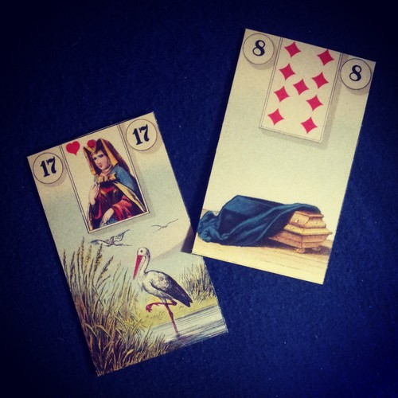

will i be pretty? will i be rich?

i threw cards a bunch of times on this one
and these two cards (stork, coffin) kept coming up
the rest were all purposefully obfuscating cards (the book, clouds)
thus, it is uncertain whether or not you will be pretty or rich.
however, it is certain that you were born, and that someday you will die.